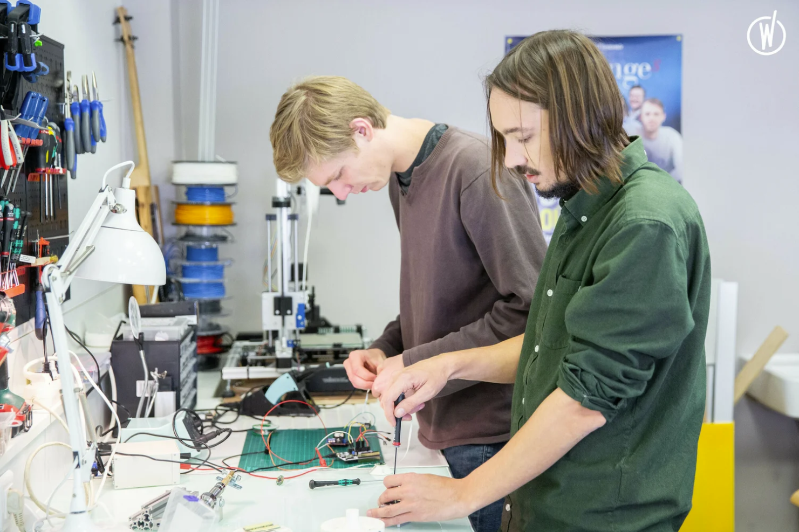

Des idées aux solutions techniques.
De la conception mécanique et mécatronique à la réalisation de solutions techniques, je vous accompagne dans vos projets de développement, d'amélioration et de rétroconception.
Des compétences transversales,
au service de vos projets.
Un accompagnement technique qui s'adapte à la nature de votre besoin : conception, documentation, évolution d'équipements ou développement de systèmes.
Conception mécanique
CAO 3D, mise en plan, cotation fonctionnelle, modification et rétroconception.
Explorer les compétences02 / PROCÉDÉSProcédés de fabrication
Usinage, fabrication additive, tôlerie, moulage et injection plastique.
Explorer les compétences03 / SYSTÈMESMécatronique & robotique
Intégration mécanique, électronique, systèmes embarqués et IoT.
Explorer les compétencesComprendre le besoin. Concevoir juste. Faire avancer le projet.
Chaque projet demande une réponse adaptée. Je peux intervenir en renfort d'un bureau d'études, participer à la définition d'un produit, redessiner une pièce existante ou contribuer à l'évolution d'une machine.
- Renfort ponctuel en conception et dessin industriel
- Redessin et adaptation de pièces ou d'ensembles existants
- Développement de produits et systèmes techniques
- Prototypage et réalisation de pièces selon le besoin

Vous avez un besoin technique ?
Présentez-moi votre projet ou votre besoin de renfort.